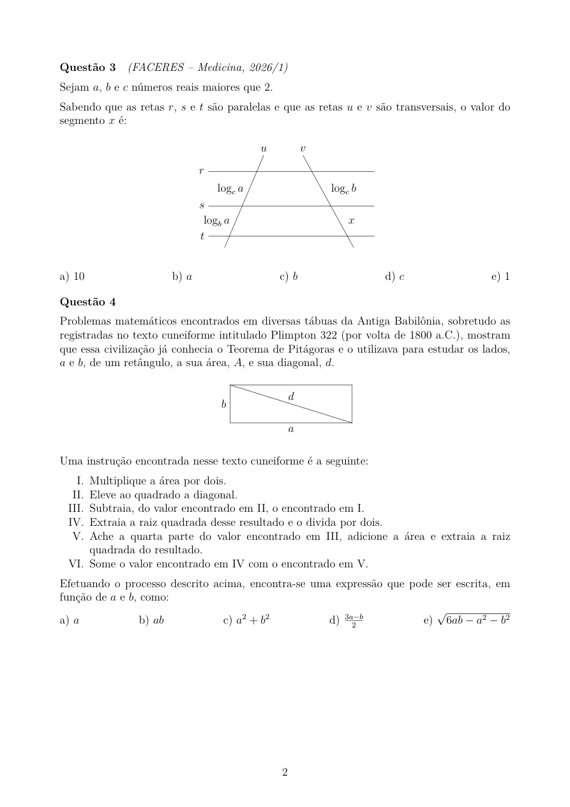

MATERIAL EM DESTAQUE · ACESSO GRATUITO
Uma lista.
Espaço para pensar.
Lista de Matemática para o 3º ano do Ensino Médio, com questões de avaliações e olimpíadas, figuras e fontes identificadas.
14 páginas · 253 KB · As imagens abaixo são prévias reais do arquivo.
UM OLHAR PARA A APRESENTAÇÃO
Texto e figura,
na mesma conversa.
Na primeira página de exercícios, um quadrado no plano cartesiano acompanha o enunciado; na seguinte, retas paralelas e transversais tornam visíveis os segmentos citados na questão.
Hierarquia tipográfica, medidas próximas às figuras e separação entre os exercícios ajudam a localizar os dados e a acompanhar a leitura.
Esta amostra reúne questões de fontes externas, como OBMEP e FACERES. A autoria dos enunciados permanece atribuída às respectivas fontes no PDF.
POR DENTRO DO ARQUIVO
Prévia das páginas.
Abra cada imagem para ampliar. Os enunciados completos também estão disponíveis no PDF.


PARA SEUS ESTUDOS OU SEU PROJETO
Qual é o próximo conteúdo?
Converse sobre aulas particulares, consulte materiais ou apresente uma necessidade da sua escola.
Conversar com Guilherme ↗Explorar o diagrama interativo →